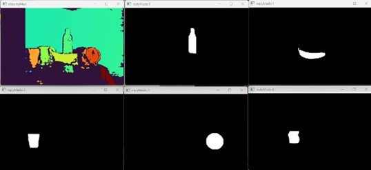
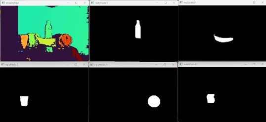

Демонстрационные примеры
Программные функции библиотеки для подсчета количества объектов интереса по данным видеопотока в реальном масштабе времени и определения курса роботизированного аппарата на объект интереса
ship.bmp – кадр видеоряда с объектом интереса на изображении;
ship.onnx – обученная модель в формате YOLO5;
ship.names – текстовый файл с именами классов объектов интереса.
Создание экземпляра класса осуществляется с помощью вызова конструктора:
mrcv::ObjCourse *objcourse = new mrcv::ObjCourse(modelPath.u8string(), classPath.u8string());
В качестве входных данных конструктор принимает полный путь к модели, полный путь к файлу с классами модели и размеры детектора.
Тестирование проводилось на синтетическом изображении — модели кадра видеопотока, содержащего объект интереса.
Режим отображения меток используется только в режиме отладки при включенном флаге IS_DEBUG_LOG_ENABLED.
Результат работы детектора:

Для выполнения основных функций модуля используются вызовы методов класса ObjCourse, как показано ниже.
Подразумевается, что тестовое изображение предварительно загружено в переменную cv::Mat frameShip.
// Подсчет объектов
int objCount = objcourse->getObjectCount(frameShip);
// Расчет курса
float objAngle = objcourse->getObjectCourse(frameShip, 640, 80);
Метод getObjectCount принимает на вход кадр видеофрейма в формате cv::Mat
и возвращает количество найденных объектов.
Метод getObjectCourse принимает кадр видеофрейма, разрешение камеры по горизонтали (в пикселях) и угол обзора камеры,
возвращая угловую поправку на текущий курс с учетом знака смещения.
Пример использования программных функций библиотеки для автоматической настройки параметров обучения нейросети с архитектурой YOLOv5
Генерация конфигурационного файла для YOLOv5s с 80 классами представлена ниже
try
{
mrcv::YOLOv5GenerateHyperparameters(mrcv::YOLOv5Model::YOLOv5s,
640, 640, "yolov5s-hyp.yaml", 80);
}
catch (const std::exception &ex)
{
std::cerr << "Error: " << ex.what() << std::endl;
}
При успешной генерации без исключений, содержимое созданного конфигурационного файла yolov5s-hyp.yaml приведено ниже:
weight_decay: 0.00050000000000000001
box: 0.075000000000000011
cls: 0.52500000000000002
cls_pw: 1
obj: 1
obj_pw: 1
anchor_t: 4
fl_gamma: 0.17004397181410924
Здесь можно заметить обозначенные ранее параметры, которые необходимы для обучения моделей детекторов и классификаторов YOLOv5.
Пример использования программных функций библиотеки для автоматической генерации конфигурационных файлов для моделей детекторов и классификаторов
Пример использования программных функций библиотеки для автоматического обучения нейронной сети для детекции и идентификации объектов
Пример использования программных функций библиотеки для детектирования аварийной ситуации технологического объекта
Пример использования программных функций библиотеки для сопровождения объекта по данным системы компьютерного зрения с применением нейросетевого подхода к предсказанию положения объекта
Пример использования программных функций библиотеки для построения региона интереса (ROI) с использованием предсказания перемещения объекта интереса на исходном изображении
Пример использования программных функций библиотеки для предварительной обработки изображений (автоматическая коррекция контраста и яркости, исправление геометрических искажений)
Пример использования программных функций библиотеки для компьютерного стереозрения для определения координат 3D точек в сегментах идентифицированных объектов и восстановления 3D сцены по двумерным изображениям
L1000.bmp, R1000.bmp – набор исходных изображений;
(66a)_(960p)_NewCamStereoModule_Air.xml – xml-файл с параметрами камеры.
Подготовка входных данных
Для подготовки входных параметров функции readCameraStereoParametrsFromFile()
необходимо загрузить исходные изображения и параметры камеры.
Также необходимо провести инициализацию параметров, как указано в примере использования.
Основная функция
Для определения координат 3D точек в сегментах идентифицированных объектов и восстановления 3D сцены по двумерным изображениям используется функция:
state = mrcv::find3dPointsInObjectsSegments(
inputImageCamera01, inputImageCamera02, cameraParameters,
inputImageCamera01Remap, inputImageCamera02Remap,
settingsMetodDisparity, disparityMap, points3D, replyMasks,
outputImage, outputImage3dSceene, parameters3dSceene,
filePathModelYoloNeuralNet, filePathClasses,
limitOutPoints, limitsOutlierArea
);
Результаты работы
 

{kind=link}


Фрагмент лог-файла
Ниже приведён фрагмент из лог-файла библиотеки во время запуска примера использования:
14:51:16 | INFO | === НОВЫЙ ЗАПУСК ===
14:51:16 | INFO | 1. Загрузка изображений из файла (успешно)
14:51:16 | INFO | загружено изображение: ./files/L1000.bmp :: 960x600x3
14:51:16 | INFO | загружено изображение: ./files/R1000.bmp :: 960x600x3
14:51:16 | INFO | 2. Загрузка параметров стереокамеры из файла (успешно)
14:51:16 | INFO | A1. Выравнивание изображения камера 01 (успешно)
14:51:16 | INFO | A2. Облако 3D точек сцены найдено (успешно)
14:51:16 | INFO | points3D.numPoints0 = 312718
14:51:16 | INFO | points3D.numPoints = 8018
...
14:51:17 | INFO | 4.8 Вывод проекции 3D сцены на экран (успешно)